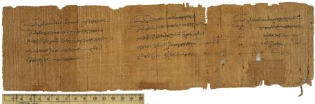

Receipt for Poll Tax.
GD 7615 (=P. Princeton II 43), 141 AD

Also
available: a larger image (252k)
Background and Physical
Properties
Publ./Side: Recto
Material: Papyrus
Items: 1
Size: 9.5 x 34.0 cm.
Lines: (i) 5 lines (ii) 5 lines (iii) 5 lines
Negative: Transparency
Conservation Status:
Status: Published
--------------------------------------------
Contents
Date: 141 AD
Provenance: Arsinoë
Acquisition: GD 7615. Gift of Robert Garrett, 1942
Language: Greek
Genre: Documentary
Author: Unknown
Type of Text/Title of Work: Receipt
Content: Receipt for Poll Tax
--------------------------------------------
Information on Publications
First edition:
Series and volume:
Published: E. H. Kase, Papyri in the Princeton University
Collections II (1936); P. J. Sijpesteijn, "Corrections
on Some Princeton Papyri," ZPE 68 (1987): 143-148
Editor:
Year:
Pg/Nr:
Photo: